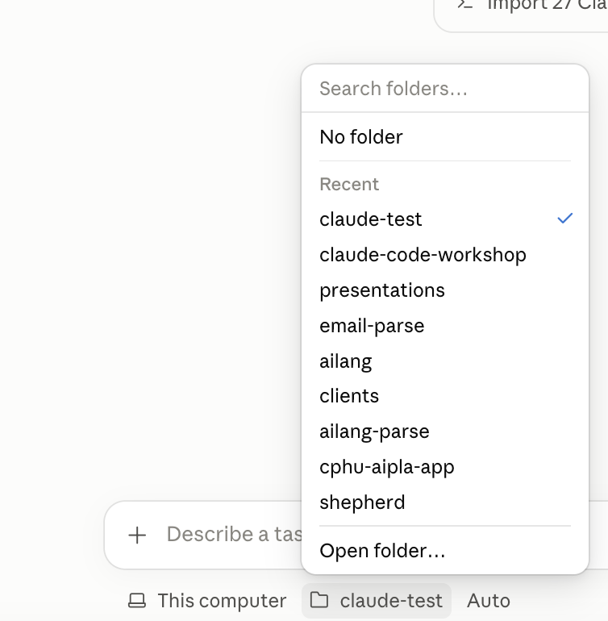
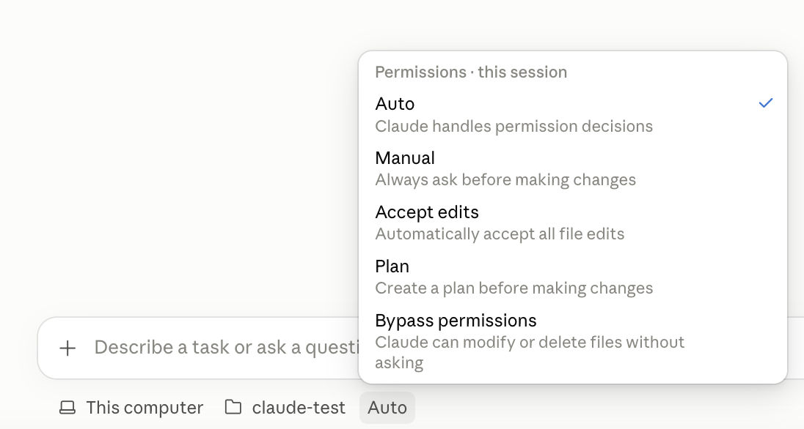
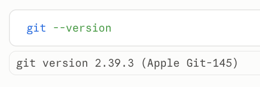
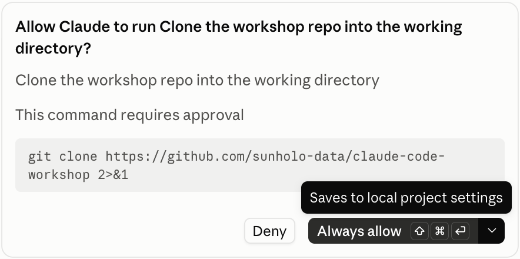
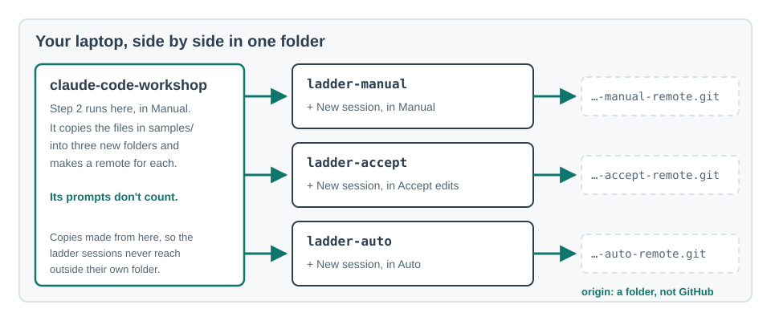
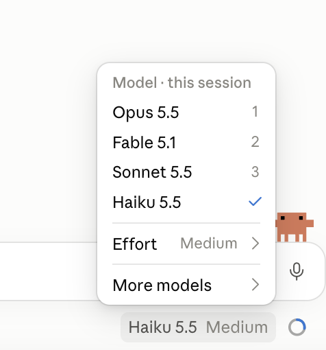
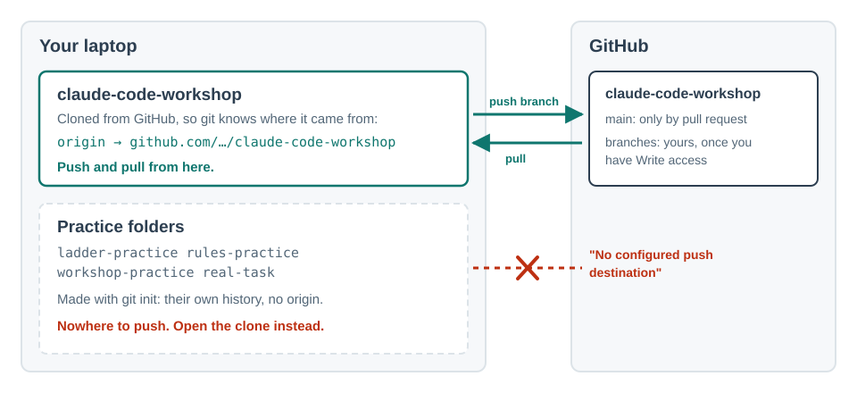
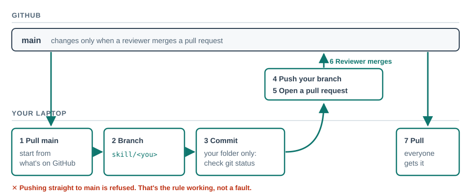

One slide per box, from the same source
Tier 0 · setup
Git, Node and a GitHub account
Tier 1 · chat to agent
Permissions and reviewing changes
Tier 2 · rules
CLAUDE.md — standing instructions
Team conventions and data handling
Tier 3 · git
Tier 4 · skills
Your skill, in everyone's copy
Tier 5 · connect
Tier 6 · share
Contribute a skill by pull request
Tier 7 · team layer
A review before anything is shared
Branch
Core boxes are the minimum for everyone today; each slide says when it's expected. Generated from lessons/<box>.md and tree/tree.yaml. Add #<box-id> to the address to open one directly.
Claude Desktop, Code tab
I can open a folder in the Code tab and get Claude to create a file in it.
Where: the Claude Desktop app on your own laptop, then a session on a new, empty folder called claude-test in your Documents, in Manual.
- Download Claude Desktop from claude.com/download, install it, and sign in.

You should see: the Claude window, signed in to the account with your paid plan.
- Click the Code button (</>) at the top left.

You should see: a message box with a folder button under it. If it asks you to upgrade, your plan doesn't include the Code tab: tell the facilitator before the day.
- In Finder or File Explorer, make an empty folder called
claude-testin your Documents. - Click + New. In the bar under the message box, choose This computer, then the folder button and Open folder…, and pick
claude-test.
You should see: the folder button now says
claude-test. - In the same bar, the mode button says Auto: that's the default. Click it and choose Manual. Leave Bypass permissions alone.

You should see: the button says Manual. No Auto in the list? Your plan or organisation hasn't turned it on; choose Manual all the same. A new session can start in Auto again, so check this button every time you click + New today.
Next to it, the model button: choose Haiku for the exercises. It's fast and uses the least of your plan's allowance; Opus and Fable are slower and can use a day's allowance in a morning of exercises. Keep them for hard work later.
- Predict: you send the prompt below. Will the file just appear? Will Claude ask you first? Where on your computer will it go?
- Send it:Create a file called hello.txt that says hello.
You should see: Claude shows the new file and asks before saving it. Accept. Then open
claude-testin Finder or File Explorer:hello.txtis there. Not there? Check the folder button saysclaude-test, not another folder.
hello.txt exists in claude-test, and you opened it yourself.- "It's the same as the chat tab." The Chat tab has no access to your files; the Code tab works in the folder you chose, and only there unless you allow more.
- "I need to install developer tools first." Not for this. Git comes next, and only because the later lessons use it.
Needs: nothing
Source: lessons/install.md · all boxes
Git, Node and a GitHub account
I have git and Node.js installed and a GitHub account I can sign in to.
Where: a session on your claude-test folder from install, in Manual.
- Predict: is git already on your computer? Most Macs have it, or offer to fetch it; most Windows PCs don't.
- In the message box, type this and send it. The
!means run this myself: the command runs straight away, without Claude and without asking, and the result appears in the conversation.!git --version
You should see:
git versionand a number. Then skip to step 5. - If it said
command not foundor nothing useful:
• Mac: git comes with Apple's developer tools. Asking for git when they're missing makes macOS offer to install them in a pop-up: click Install and wait a few minutes. No pop-up? Send!xcode-select --install.
• Windows: install Git for Windows from git-scm.com/downloads/win, accepting the defaults. Quit Claude Desktop and open it again afterwards, so it finds git. - Send
!git --versionagain. You should see:git versionand a number. Still not found? Bring the message to the facilitator's helper. - If you don't have a GitHub account, make one at github.com/signup. Use the email you'll use for work, and turn on two-factor sign-in when it offers. You should see: your profile at github.com/<your-username> when you're signed in.
- Send your GitHub username (not your password) to the facilitator, the way they asked for it.
- Check for Node.js: skills and scripts later in the course run on it, and it's the one other tool you need.!node --version
You should see: a version such as
v22.….command not found? Ask Claude:Install the current LTS version of Node.js on this computer. Tell me each step before you run it.Approve each step as you read it (on a Mac it may ask for your password in a pop-up: that's macOS, type it there, never in the chat). Then quit Claude Desktop, open it again, and send
!node --versiononce more.
!git --version and !node --version in the Code tab print versions, and the facilitator has your GitHub username.- "Git and GitHub are the same thing." Git is the tool on your laptop and works with no account at all. GitHub is a website that stores copies of git repositories so people can share them.
- "Commands need a terminal." A
!in the message box runs one for you, and Claude can see the result. Most of the day you will ask Claude to run commands and read them, not type them.
Needs: Claude Desktop, Code tab
Source: lessons/git-installed.md · all boxes
Get the workshop
I can have Claude clone a repository from GitHub, and open a session on it.
Where: first a session on your claude-test folder from install, in Manual, to make the copy. Then a + New session on the copy, claude-code-workshop, in Manual.
- In the Code tab, open a session on
claude-testand check the mode button says Manual. - Predict: you ask Claude to copy the workshop from GitHub. Which command will it want to run, and will it ask you first?
- Send:Clone https://github.com/sunholo-data/claude-code-workshop into this folder, then tell me how to start the workshop.
- Claude shows you the command (
git clone …) and asks before running it. Read it, then allow it.
The big button may say Always allow: that saves a rule, so this command never asks again in this folder. Look at the arrow beside it before choosing. Which you pick is your first trust decision of the day. Reading approvals is the habit the whole day builds.
You should see:
Cloning into 'claude-code-workshop'…, then a short answer: start a new session on the workshop folder. Asking for the one thing you want next, rather than "what's in it?", gets a short answer. - Start a new session yourself: + New at the top left. Click the folder button under the message box: it still says
claude-test. Choose Open folder…, go intoclaude-test, and pickclaude-code-workshop. Set the mode to Manual. You should see: the folder button saysclaude-code-workshop. - Predict: what would it mean to trust a folder you hadn't read?
- You'll see This workspace isn't trusted. A folder you downloaded can carry its own Claude settings, so Claude asks before using them. Send:start the workshop
and choose Trust workspace: that's what lets the course's guide, rules and settings load. If the banner shows but the question never comes, quit Claude Desktop and open it again, then go back to this session.
This folder also lists one MCP server,
google-developer-knowledge, in its.mcp.json. If you are asked whether to use it, allow it: you'll use it in block 6, and it does nothing until you add a key there. A notice thatGOOGLE_DK_API_KEYis missing is expected for the same reason; ignore it until then. - The guide reads the course and offers you somewhere to start. The first time, it asks to create
progress.md, your own record of what you've done. Allow it. You should see: a short list of where you can start, andprogress.mdin the folder.
If git isn't working yet
On the GitHub page, click the green Code button, then Download ZIP. Unzip it and select the unzipped folder in step 5. Block 2 works the same way up to trust-ladder, which needs git, and so does everything after it. Before then, get git working (git-installed), redo step 3, and ask Claude to copy your progress.md across to the new folder.
progress.md exists in that folder.- "Claude is inside GitHub." Claude works on files on your laptop. GitHub is where the shared copy lives; cloning brings a copy down.
- "One session can see everything." A session sees the folder you chose. That's why step 5 opens a new session on the workshop folder, rather than carrying on in
claude-test.
Needs: Claude Desktop, Code tab · Git, Node and a GitHub account
Source: lessons/get-workshop.md · all boxes
Chat versus agent
I can explain what changes when the AI reads and writes files and runs commands, instead of me pasting text in and out.
Where: a session on the claude-code-workshop folder, in Manual: the one where you typed start the workshop. If you closed it: + New, the folder button, Open folder…, choose claude-code-workshop, and set the mode to Manual.
- Open
samples/tagging-plan.mdyourself, in Finder or File Explorer, and skim it. It is a made-up plan for a made-up shop. - Predict: you send the prompt in step 3. What will Claude do first: answer from memory, or read the file? What will it ask you before saving anything?
- Send:In samples/tagging-plan.md, mark the search event as Live and add a row to the change log for today.
You should see: Claude reading the file, then a proposed change in red and green, and a request to save it. Accept it. It asked nothing? Check the mode button says Manual.
- Open the file again yourself. Is the change exactly what you asked for, and nothing else?
- Compare: how would you have done this in a chat window? Count the copy-and-paste steps.
You'll put samples/ back as it was at the end of permissions-review, so leave the change for now.
samples/tagging-plan.md, and you opened it afterwards and said what changed.- "It will reply with the new text for me to paste." It changes the file on disk. The reply is a report of what it did, which is why you check the file and not only the reply.
- "It already knows what's in my files." It reads them when it needs to, in this session. You can watch it do so.
Needs: Get the workshop
Source: lessons/chat-vs-agent.md · all boxes
The folder is the context
I can point Claude at the files it needs with @, and say what it can and cannot see.
Where: a session on the claude-code-workshop folder, in Manual.
- In the message box, type
@and thentagging, and picksamples/tagging-plan.mdfrom the list. Then type@anddaily, and picksamples/daily-sessions.csv. You should see: both file names in the message box. - Predict: after the two files, you'll ask the question below. Which part can Claude answer from these two files, and which part can't it? What will it do with the part it can't?Why did newsletter signups drop to zero, and what explains the jump in sessions on 19 September?
- Type that question after the two file names, and send it. You should see: an answer that finds the rename in the tagging plan. Check what it says about 19 September.
- Then ask:Which files did you read to answer that? What would you need to explain the 19th?
- "It can see my whole computer." It works in the folder you opened. Reaching outside it needs your permission.
- "It read everything in the folder." It reads what it decides is relevant;
@makes sure.
Needs: Chat versus agent
Source: lessons/folders-context.md · all boxes
Permissions and reviewing changes
I can pick a permission mode, read a diff, and reject a change I don't want.
Where: a session on the claude-code-workshop folder, in Manual.
- Check the mode button under the message box says Manual.
- Predict: you'll send the deliberately vague prompt below. What will "tidy" mean to Claude? Which lines will it touch?Tidy up samples/tagging-plan.md.
- Send it. Read the diff before deciding: red is removed, green is added. Look for anything you didn't ask for, such as a reworded open question or a changed date. You should see: a proposed change and a request to save it. Nothing to review because it saved straight away? The mode isn't Manual: set it and ask again. Claude lists a few options and asks which you want, instead of editing? That's a fair answer to a vague request: pick one, and it will propose the change.
- Click Reject on at least one change, and say out loud why. You should see: Claude asking how to proceed. Tell it precisely what you do want, such as:Only fix the formatting of the table. Don't change any wording or dates.
and accept that.
- Switch the mode to Accept edits and send:In samples/tagging-plan.md, change "Last reviewed" to today's date.
You should see: the file saved without a prompt, and a
+N -Nindicator. Click it to review the change after the fact. - Put
samples/back as it was, so later exercises start from the original files. Switch back to Manual and send:Put the samples folder back exactly as it was in the last commit, with git restore samples/.You should see: a request to run
git restore samples/(it's an ask rule: approve it), then no changes insamples/. Check with!git status.
- "Accepting is a formality." The diff is the one moment you see exactly what will change. Reading it is the job.
- "Rejecting means starting again." Claude keeps the conversation and asks what you want instead.
Needs: Chat versus agent
Source: lessons/permissions-review.md · all boxes
Plan before acting
I can use Plan mode to agree an approach before anything is changed.
Where: a session on the claude-code-workshop folder, in Plan.
- Set the mode button to Plan.
- Predict: you'll send the prompt below. What will the plan contain? Will it pick up the open question about email addresses in search terms on its own?Add a section to samples/tagging-plan.md describing how we'd track the search event, including what must not be recorded.
- Send it. You should see: Claude reading the file, then a plan. No edit and no save prompt: Plan changes nothing.
- Read the plan. Change at least one thing, then ask for the revised plan:Also cover who signs off the event, and keep the new section under ten lines. Show me the revised plan.
- When the plan says what you want, approve it. Of the options offered, choose the one that keeps you approving each edit: it may be labelled Yes, manually approve edits. Don't choose the one that switches to Auto or auto-accepts edits. You should see: a save prompt for the edit, before anything is saved. If the mode button says Auto or Accept edits, set it to Manual. Check the result against the plan, not against your memory of it.
- Put
samples/back as it was, so later exercises start from the original files:Put the samples folder back exactly as it was in the last commit, with git restore samples/.You should see: a request to run
git restore samples/(approve it), then no changes insamples/.
- "Plan mode is slower." Changing a plan is one sentence. Unpicking edits across several files is not.
- "The plan is Claude's decision." It is a proposal. The point of this mode is that you edit it.
Needs: Permissions and reviewing changes
Source: lessons/plan-first.md · all boxes
Trust is earned per action
I can say which of Claude's actions I approve every time, which I let through, and which it may never do, and why each sits where it does.
Where: first a session on the claude-code-workshop folder, in Manual, to build three copies. Then one + New session on each copy, which you open yourself: ladder-manual in Manual, ladder-accept in Accept edits, ladder-auto in Auto. The copies have no rules of their own yet, which is the point.
- Check git knows who you are. Send:!git config user.email
You should see: your email. Nothing? Git won't ask you later: a commit either stops with "Author identity unknown" or, on a Mac, goes through under a made-up name from your laptop's name. Set it now:
Set my git name to <your name> and email to <the email on your GitHub account>, for every repository. - Build the three copies, each with its own first commit and its own place to push to. In the workshop session:

Next to this workshop folder, not inside it, make three folders: ladder-manual, ladder-accept and ladder-auto. Copy the files in samples/ into each one, not the samples folder itself. Make each a git repository and commit those files. Then, also next to this folder, make three empty repositories with git init --bare: ladder-manual-remote.git, ladder-accept-remote.git and ladder-auto-remote.git. Add each one to its folder as the remote called origin.You should see: several approval prompts (approve them: this session's prompts don't count), then three folders and three
.gitrepositories next toclaude-code-workshop. Check with!ls ... Nothing goes to GitHub: each copy pushes only to a folder on your laptop. - Predict: you'll send the task below once in each copy. How many times will Claude stop and ask in Manual? In Accept edits? In Auto? Write your three numbers down.Sort the files in this folder into folders by type, write a short README listing them, and commit.
- + New, open
ladder-manual, set the mode to Manual, and send the task from step 3. Count every approval prompt. You should see: a prompt for most steps: making folders, moving files, writing the README, committing. If it asks whether you trust the folder, say yes; that one doesn't count. - + New, open
ladder-accept, set Accept edits, send the task, count. - + New, open
ladder-auto, set Auto, send the task, count. No Auto in the mode selector? Your plan or organisation hasn't turned it on. Do 4 and 5, and skip step 7. - Still in the
ladder-autosession, guess first: will it ask, try, or refuse? Then:Now push this to origin.You should see: either a push to
ladder-auto-remote.gitor a prompt. With no rules, whether Auto stops is a background check's call, not yours. In block 3 you add an ask rule forgit push, and from then on it stops for you even in Auto. That is a ceiling: publishing stays at proposing, permanently. - Go back to the
ladder-manualsession and ask for one more small change:Add one line to the README saying when these files were sorted, and commit it.When it asks to run
git commit, choose Always allow. Then ask for another line and a commit. You should see: no prompt for the commit this time. You've promoted one action from proposing to automated, on the evidence that you approved it each time without changing anything. The rule is saved in this folder only.
- "Auto mode means I've stopped checking." You've stopped checking the routine. The actions you've marked as ask still stop for you, every time.
- "Trust is a setting for the whole session." It's per action. The same session can commit freely and still ask before every push.
Needs: Permissions and reviewing changes · Git, Node and a GitHub account
Source: lessons/trust-ladder.md · all boxes
Choosing a model
I can choose a model for a task, and say what I trade between quality, speed and plan usage.
Where: a session on the claude-code-workshop folder, in Manual.
- Open the model menu at the bottom right, under the message box, and note which models you can choose and which one is selected.

- Predict: you'll ask two models the same thing. Which will be faster? Which answer will you prefer, and will you be able to tell them apart?
- On the selected model, send:Read samples/daily-sessions.csv and give me three bullet points on what happened in September.
You should see: three bullets, with no approval prompt: reading a file inside the folder doesn't ask.
- + New, open
claude-code-workshopagain, choose a different model in the menu, and send exactly the same prompt. - Compare: speed, accuracy (check one number against the CSV yourself), and whether either noticed the signups dropping to zero.
- "Always use the biggest model." It costs more of your allowance and is slower; for a small, well-described task it often adds nothing.
- "The model is the only thing that matters." A clear request and the right files usually change the answer more than the model does.
Needs: Chat versus agent
Source: lessons/models.md · all boxes
Sessions and context
I know when to start a fresh session, and why long sessions get worse.
Where: a session on the claude-code-workshop folder, in Manual, then two + New sessions on the same folder.
- Look back at one of your earlier sessions today, in the sidebar. How many different things did you ask for in it?
- Predict: you start a new session and ask "carry on with the tagging plan". What will Claude know about what you did before: nothing, the files, or your earlier conversation?
- + New, open
claude-code-workshop, Manual, and send exactly:carry on with the tagging planYou should see: Claude reading files to work out what you mean, or asking. It has the folder, its
CLAUDE.md, and any notes it saved for itself, but not your earlier conversation. - Now write a one-paragraph brief instead: what the task is, which files matter (with
@), what is already done, and what "done" looks like. For example:I'm adding a section on the search event to @samples/tagging-plan.md. Nothing is written yet. It should say what we record, what we must not record (email addresses typed into search), and who signs it off, in under ten lines. Show me a plan first.+ New again, same folder, and send your brief.
- Know the other tool: typing
/compactasks Claude to summarise the current session now and keep going, which frees room without starting over.
- "It remembers yesterday." A new session doesn't have your earlier conversation. It starts with the folder, any standing instructions (that's the next tier, CLAUDE.md), and its own auto memory: short notes Claude chose to keep from earlier sessions on this folder. Not what you said.
- "Longer conversations give it more to go on." Past a point they give it more to get confused by.
Needs: The folder is the context
Source: lessons/context-hygiene.md · all boxes
CLAUDE.md — standing instructions
I can write a CLAUDE.md and watch it change what Claude does.
Where: a session on the claude-code-workshop folder, in Manual, then a + New session on the same folder.
- Before. Send:What happened to newsletter signups in samples/daily-sessions.csv? Give the dates.
Note how it writes dates, and whether it says what it read.
- Create
CLAUDE.local.mdyourself, not by asking Claude: if Claude wrote it, the rule would already be in this conversation and step 4 would prove nothing.
• Mac: open TextEdit, File → New, then Format → Make Plain Text.
• Windows: open Notepad. Paste this one line:- Write dates as "15 Sept 2026", never 2026-09-15. End every answer with "Read:" and the files you read.Save it in the
claude-code-workshopfolder asCLAUDE.local.md(on a Mac, untick If no extension is provided, use ".txt"; in Notepad, set Save as type to All files).You should see:
CLAUDE.local.mdnext toCLAUDE.mdin the folder, notCLAUDE.local.md.txt. - Predict: you ask the same question again in the same session. Will the rule apply?
- Try it: send the step 1 prompt again in this session. Then + New, open
claude-code-workshop, Manual, and send it once more. You should see: most likely, the old style in the first session and the new one in the new session: the file is read when a session starts. No change in the new session? Check the file's name and that it's in the workshop folder itself. - Make the rule worse on purpose. In your editor, replace the line with "be clear about dates", save, start another + New session, ask again, and see what survives.
- Don't commit
CLAUDE.local.md; it's yours, and git already ignores it. The rule now applies to every later session on this folder, the guide's included. Delete the line when you're done with it, or keep it if you like answers that say what they read.
- "I told it once, so it knows." A message lasts one session. A line in CLAUDE.md lasts every session.
- "It picks up the change immediately." The file is read when a session starts; that's why you needed a new one.
Needs: The folder is the context
Source: lessons/claude-md.md · all boxes
Team conventions and data handling
I can say what may and may not be given to a model, and where that rule is written down.
Where: the whole group together, with the facilitator's shared document open (they send the link). Then each person in a session on the claude-code-workshop folder, in Manual.
- Read your group's data rule, word for word:Show me the data_policy line in overlay/overlay.yaml and everything in overlay/CLAUDE.md, word for word. Don't summarise.
You should see: the rule, quoted. "There's no overlay folder"? Ask the facilitator for the rule in writing before going on.
- Predict: on your own, before anyone talks, write down one kind of material you think is fine to give Claude and one you think isn't. Then compare as a group. Where did you disagree?
- Together, in the shared document, write under these headings, in this order:
• Data handling: the group's rule, pasted word for word; what's allowed; what isn't; who to ask when unsure (a name).
• Our lines: empty for now. - Each person adds one line of their own under Our lines: a habit, a check, a naming rule, anything you'd want a colleague's Claude to follow.
- When everyone's line is in, select the whole document, copy it, and paste it after this prompt:Save the text below as CONVENTIONS.md in this folder, exactly as written. Don't commit it.
You should see: a request to create
CONVENTIONS.md(approve). It stays out of your commits: in the follow-up it moves into the team's own repository. - Point your own sessions at it. This goes in your personal file, not the shared
CLAUDE.md:Add the line "Follow CONVENTIONS.md." to CLAUDE.local.md in this folder. Create the file if it doesn't exist. - + New for a fresh session on the same folder, and ask:What may and may not you do with client material in this folder, and where is that written?
You should see: the rule from
CONVENTIONS.md, with the file named. If it answers from general knowledge instead, check step 6 saved, and that this is a new session.
- "Data rules are IT's problem." The choice of what goes into a session is made by whoever types it, every time.
- "If Claude can open a file, I'm allowed to give it." Access is not permission. The rule decides, not the folder.
Needs: CLAUDE.md — standing instructions
Source: lessons/team-conventions.md · all boxes
Your rules — allow, ask, deny
I can write the settings that let routine actions through, always stop for the risky ones, and block the ones that must never happen.
Where: first a session on the claude-code-workshop folder, in Manual, to build a folder called rules-practice next to it. Then a + New session on rules-practice, in Auto, and later Manual.
- Read settings/README.md: one line per rule, saying which rung it puts the action on and why.
- Predict: with these rules, which of these will just happen, which will ask, and which will be refused? Commit a change. Push it. Delete a file. Read a file called
.env. - Build a folder that has something for every rule to act on. In the workshop session, send:Make a folder called rules-practice next to this one. Copy the files in samples/ into it, not the samples folder itself, make it a git repository and commit. Next to it, make an empty repository with git init --bare rules-practice-remote.git and add it to rules-practice as origin, so there is somewhere to push without GitHub. In rules-practice, write a .env file with the one line API_KEY=not-a-real-key and add .env to .gitignore. Last, copy the permissions block from settings/starter.json into rules-practice/.claude/settings.json and commit that.
Read each command before you approve it. If Claude stops to warn that copying will replace an existing permissions block, say: "This folder is only for practice: replace it."
You should see:
rules-practicewithtagging-plan.mdanddaily-sessions.csvat the top (not in asamplesfolder), a.env, a.claude/settings.json, and two commits. The.envis written now, from this session, because the workshop's rules don't reach a file outside the workshop folder. In a session onrules-practice, its own deny rule would stop Claude creating it: a deny on reading a file also blocks writing it. - + New, the folder button, Open folder…, choose
rules-practice, and set Auto. No Auto in the selector? Choose Accept edits: the ask and deny rules behave the same. If it asks whether you trust the folder, say yes: until you do, the file's allow rules wait. - Send these one at a time, and compare each with your prediction:Add a line to tagging-plan.md saying "Reviewed in the workshop", and commit it.
You should see: no prompt: committing is allowed.
Push it.You should see: a prompt (push is an ask rule, even in Auto). Approve it. The first push may fail with no upstream branch and ask a second time, for
git push -u origin …; approve that too.Delete tagging-plan.md.You should see: a prompt for
rm. Choose no.Show me what's in .env.You should see: a refusal: reading
.envis denied. If Claude then tries another way, such asgrep -ror a small script, note it: that's the third misconception below, live. - Switch to Manual and ask for something that isn't in the rules:Move daily-sessions.csv into a folder called data.
When it asks to run the
mvcommand, choose Always allow. - Open
rules-practice/.claude/settings.local.jsonyourself, in Finder and a text editor, not by asking Claude: reading that file is on the deny list. In Finder the.claudefolder is hidden: press ⌘⇧. (Command, Shift, full stop) to show it; in File Explorer, View → Show → Hidden items. You should see: anallowlist with the rule you just promoted. Decide whether it belongs in the team's file or only in yours. - Add one rule of your own for something in your real work that should always ask:Add "Bash(<the command> *)" to the ask list in .claude/settings.json in this folder, and commit.
You should see: a prompt to save the settings file (approve) and a commit. Say out loud why it belongs in ask.
- "Writing 'never push without asking' in CLAUDE.md does the same job." CLAUDE.md shapes what Claude tries to do. Permission rules are enforced by Claude Code whatever the model decides.
- "A narrow allow can make an exception to a broad ask or deny." It can't. Deny and ask are checked first, which is why
git checkoutasks even though moving between branches is safe: usegit switchfor that.
Needs: Trust is earned per action · CLAUDE.md — standing instructions
Source: lessons/settings-permissions.md · all boxes
What else settings can do
I can choose which settings file a setting belongs in (the team's, mine for this project, or mine everywhere) and check that it took effect.
Where: a session on the claude-code-workshop folder, in Manual, then + New sessions on a new, empty folder called settings-test next to it.
- Predict: which file does each of these belong in? Every new folder starts in Manual. Your API key. Claude answers in French. Claude may read the team's shared folder of briefs.
- Ask:Which settings file does each of these belong in, and why: every new folder starts in Manual; my API key; Claude answers in French; Claude may read the team's shared folder of briefs.
Compare with your prediction. The key is the one with a fixed answer:
settings.local.json, as in add-mcp. - Set a start mode you'll be able to see. Manual may already be what a new session starts in, so use Accept edits:Set permissions.defaultMode to acceptEdits in my ~/.claude/settings.json, keeping everything else in it. Then make an empty folder called settings-test next to this workshop folder.
You should see: a prompt to save
~/.claude/settings.json: it's outside this project, so it asks. Read the change, then approve. - + New, the folder button, Open folder…, choose
settings-test. You should see: the mode button says Accept edits. Still Manual? Quit Claude Desktop, open it again, and start a new session onsettings-test. - Now pick Manual in the selector, then + New on
settings-testagain. Which mode does it start in this time, and what does that tell you about the selector? You should see: Manual: the mode you picked is remembered for this folder and beatsdefaultModethere. - Take it out again, so new folders don't save edits without asking. Back in the workshop session:Remove permissions.defaultMode from my ~/.claude/settings.json, keeping everything else.
- Choose one setting that would help your own work (a default model, the language it answers in, a folder outside this one), and ask:Add <the setting> to <the file you chose>, and tell me how to check it worked.
Start a new session and check it.
- "The team's file applies the moment I clone." Its allow rules, extra folders and most
envvalues wait until you trust the folder: that's the prompt you met at setup. Its ask and deny rules apply straight away. - "Edit a setting and the running session follows." Most settings reload as you save. The model is read when a session starts, so a new one is the reliable check.
Needs: Your rules — allow, ask, deny
Source: lessons/settings-tour.md · all boxes
Git as undo
I can ask Claude to commit my work, see what changed, and go back.
Where: first a session on the claude-code-workshop folder, in Manual, to make a folder called workshop-practice next to it. Then a + New session on workshop-practice, in Manual.
- Check git knows who you are. Send:!git config user.email
You should see: your email. Nothing? Git won't ask: the first commit would stop with "Author identity unknown", or on a Mac go through under a made-up name. Set it first:
Set my git name to <your name> and email to <the email on your GitHub account>, for every repository. - Make
workshop-practice:Copy the files in samples/ to a new folder called workshop-practice next to this workshop folder, not inside it. Make it a git repository and commit those files.You should see: a prompt for each command (read each one before approving), then a commit with
2 files changed. - + New, the folder button, Open folder…, choose
workshop-practice, and set Manual. - Make two small changes, committing after each:In tagging-plan.md, change the Owner line to "the analytics team". Commit this with a message saying what changed.Add an open question to tagging-plan.md: "Do we track zero-result searches?" Commit this with a message saying what changed.
You should see: an edit to approve, then a commit, each time.
- Look at the record:Show me the history, and what changed in the last commit.
You should see: three commits, newest first, and the last one's change in red and green.
- Predict: you ask "undo the last commit's change". What happens to the file? What happens to the history: is the commit deleted, or is a new one added?
- Try it:Undo the last commit's change.
You should see: a
git revertto approve (or agit reset, which asks: ask for a revert instead, so the history keeps both). Opentagging-plan.md: the open question is gone. - Ask for the history again.Show me the history.
You should see: four commits, the newest saying it reverts the one before.
- "Undo means the mistake is erased." The safe way, a revert, adds a new commit that reverses the old one. The history keeps both, which is the point.
- "Git saves automatically." Only when you commit. Changes since the last commit can't be recovered by git.
Needs: Permissions and reviewing changes · Git, Node and a GitHub account
Source: lessons/git-safety-net.md · all boxes
Clone, branch, push
I can clone a repository, work on a branch, and push it.
Where: a + New session on the claude-code-workshop folder you cloned at the start, in Manual. Not ladder-manual, rules-practice or workshop-practice: those were made with git init and push, if at all, only to a folder on your laptop.
- Check which folder you're in, and that it can reach GitHub.

Send each line (the
!runs it without Claude):
•!git remote -v. You should see: agithub.com/…/claude-code-workshopaddress. Nothing, or a path on your laptop? Wrong folder: + New, chooseclaude-code-workshop.
•!git config user.email. You should see: your email. Nothing? Ask Claude: "Set my git name to <your name> and email to <the email on your GitHub account>, for every repository."
•!gh auth status. You should see:Logged in to github.com account <you>. Not found, or not logged in? Install GitHub CLI from cli.github.com, then in the terminal pane (Ctrl and the backtick key) typegh auth login, choose the browser, and thengh auth setup-git. Never in the chat, never with!.
•!gh repo view --json viewerPermission. You should see:WRITEorADMIN.READ? The facilitator hasn't added you yet, or you haven't accepted the invitation (your email, or github.com/notifications). Tell the facilitator and wait. - Put back anything earlier exercises changed here, so your branch carries only today's work:Show me git status. If any tracked files are changed, list them, then put them back to match the last commit. Leave untracked files alone.
You should see: a list, a request to run
git restore(approve it), then a clean status. Untracked files such asCONVENTIONS.mdstay, and that's fine. - Make your branch. Use your GitHub username:Make a branch called practice/<your-github-username> and switch to it.
You should see:
Switched to a new branch, with no prompt:git switchis allowed. If it asks to rungit checkout -binstead, that's an ask rule; approve it. - Make one change and commit only that file:Create notes/<your-github-username>.md with one line saying what you want from this course. Commit only that file.
You should see: one new file, and a commit with
1 file changed. More than one file? Say "undo that commit, then commit only notes/<your-github-username>.md". - Predict: you ask Claude to push the branch. Will it ask you first? Will your change appear on the
mainbranch on GitHub? - Push it:Push this branch to GitHub.
You should see: an approval prompt (push is an ask rule; approve it), then
* [new branch]. On github.com/sunholo-data/claude-code-workshop, open the branches list and find yours. It may ask twice the first time, once more to set the upstream. - Now try what you shouldn't be able to do:Push this branch's commit straight to main on GitHub, with git push origin HEAD:main. Don't merge anything into my local main.
You should see:
! [remote rejected]andChanges must be made through a pull request. That refusal is the proof. If Claude offers to merge intomainlocally or to force the push, say no.
Not in a facilitated group? You can't push to this repository. Ask Claude to fork it to your own account with gh repo fork --remote and push your branch there. Step 7 won't be refused on your own fork: that refusal needs the group's repository and its rule.
main.- "Pushing changes everyone's copy." It adds your branch to GitHub. Nothing reaches the main branch until someone merges it, and nobody's laptop changes until they pull.
- "Cloning is downloading." A download is a snapshot. A clone keeps the history and knows where it came from, so you can push back and pull updates.
Needs: Git as undo
Source: lessons/clone-branch.md · all boxes
Use someone else's skill
I can clone a repo that carries a skill and get the result its author intended, without knowing how.
Where: first a session on the claude-code-workshop folder, in Manual, to clone. Then a + New session on the cloned presentation-template folder, in Manual. That session has its own CLAUDE.md and skill, and none of the workshop's: no guide, and none of its permission rules, so Manual asks before every command and edit.
- Clone the template next to the workshop folder:Clone https://github.com/sunholo-data/presentation-template next to this workshop folder, not inside it.
You should see: a
git clonerequest (approve), thenpresentation-templatenext toclaude-code-workshop. - + New, the folder button, Open folder…, choose
presentation-template, and set Manual. The skill only loads in a session opened on that folder. You should see: the folder button sayspresentation-template. Type/andpresentation-slidesis in the list. - Open
demo/presenter.htmlin your browser (double-click it in Finder or File Explorer) to see a finished deck. The arrow keys move between slides; the sun/moon button switches theme. - Predict: you are going to ask for a deck without naming the skill. Will Claude use it anyway? Which files will it open first?
- Send, with a topic you know well:Build a 3-slide deck in my-deck/ about <something you know well>.
Watch which files it reads before it writes anything. The skill mentions a
frontend-designskill: you don't have it, and you don't need it. Ignore that line, and say no if Claude offers to install it.You should see: Claude reading
SKILL.mdand itsresources/, then a request to create a file inmy-deck/(approve). - Run the check yourself. The repository's own instructions tell Claude to lint the folder, which checks nothing (see below), so name the files. Send:!node .claude/skills/presentation-slides/scripts/lint-slides.mjs my-deck/*.html
You should see: no output: it passed. A list of
file:lineproblems? Ask Claude to fix them and run the line again.node: command not found? Your laptop has no Node: skip the lint, tell the facilitator, and do step 7 carefully. - Open your deck in the browser. Switch theme. Then make the window tall and narrow: does anything spill off the slide?
- Record it in the workshop: go back to your session on
claude-code-workshop(in the sidebar) and tell the guide "I've done use-a-skill", with the lint command you ran.progress.mdlives there, not inpresentation-template.
my-deck/, built with the presentation-slides skill, passing its lint, and the lint command you ran, with the deck's file names in it.- "To use a skill I need to know how it works." You asked in your own words. The skill's description matched the request, and Claude did the rest.
- "The lint passed, so my deck was checked." Run it with just the folder name,
my-deck, instead ofmy-deck/*.html. It prints nothing and reports success, because it checked no files at all. A check that cannot fail tells you nothing.
Needs: Clone, branch, push · CLAUDE.md — standing instructions
Source: lessons/use-a-skill.md · all boxes
How a skill is built
I can read a SKILL.md and say when it triggers, what it tells Claude, and what it carries with it.
Where: your session on the presentation-template folder from use-a-skill, in Manual, then + New sessions on the same folder.
- Open
.claude/skills/presentation-slides/SKILL.mdin an editor, or ask:Show me .claude/skills/presentation-slides/SKILL.md, the frontmatter first. - Find the three parts. Copy out the description. List the files in
resources/andscripts/, and for each one find the sentence in the body that tells Claude when to use it, or note that none exists. (At least one file has none: what does that mean for when Claude will open it?) - Predict: which of these will trigger the skill? "Make me some slides", "I need something to show on the screen on Thursday", "Turn these notes into something I can present." Write yes or no for each.
- Try each in a fresh session (+ New on
presentation-template), so nothing carries over. Afterwards, ask:Which skill did you use, if any? - Pick a phrase you would really say that missed, or only just hit. Edit the description so it covers that phrase, without making it so broad that it fires on any request about a document.
- + New again and try your phrase. Claude would see the edit in the old session too, but a new one is the clean test: nothing from the earlier attempts carries over.
- "Claude reads every skill all the time." It reads every description. The body loads only when the skill is used, which is why a folder can carry many skills, and why a vague description means a skill that never fires.
- "The name is what makes it fire." The name is how you call it directly (
/presentation-slides). Picking it unprompted is the description's job.
Needs: Use someone else's skill
Source: lessons/skill-anatomy.md · all boxes
Write your own skill
I can turn something I do repeatedly into a skill that someone else could run.
Where: a new folder, skill-work, next to the workshop folder: your own, local, not on GitHub. Make it from a session on the claude-code-workshop folder:
Then + New on skill-work, in Manual.
- Pick a task you do at least weekly and can describe in about five steps. Use material your group's data rule allows, or a made-up stand-in of the same shape: ask Claude to make one.
- Do the task once with Claude, the ordinary way. Note every time you had to correct it.
- Turn it into a skill:Turn what we just did into a project skill at .claude/skills/<your-github-username>-<short-name>/SKILL.md, with name set to the same as the folder. Include the corrections I made.
You should see: one new
SKILL.md. Read it before you approve it. - Check the description. Is it in the words you'd use when you need this, and does it say when the skill should not be used? If not, ask Claude to rewrite it in your words.
- If the skill needs a tool to be open or connected (the Browser pane, a connector, an MCP server), say so near the top of
SKILL.md, with what to do if it isn't: "This needs the page open in the Browser pane. If it isn't, ask the person to open it first." A skill that worked in your session can fail in a colleague's for exactly this reason. - If the output has a fixed format, ask for a template in the skill's
resources/folder. If a step is mechanical, such as counting, renaming or reformatting, ask for a script inscripts/instead of an instruction. - Predict: a colleague asks for the task in their own words. What will they get, and at which step will they need to ask you something?
- Test it yourself as a stranger would: + New for a fresh session on
skill-work, ask for the task in different words from the description, and don't help. Fix what you had to explain. Then commit:Commit the skill folder. - Bring it to the next session. There it goes into the team's repository by pull request (share-skill-pr), and a colleague runs it as the review: that's the colleague test.
- "A skill is just a saved prompt." It is a prompt, a rule for when to use it, and the files it carries, kept in git so that changes to it are visible and reviewed.
- "It works for me, so it works." What you know leaks in without you noticing. The colleague test is the only one that finds it.
Needs: How a skill is built
Source: lessons/write-a-skill.md · all boxes
Your skill, in everyone's copy
I can propose a change by pull request, and once it is merged, pull and see my work and everyone else's in my own copy.
Where: a session on the claude-code-workshop folder, in Manual, after clone-branch worked. If it didn't, do its step 1 (the GitHub check) first.

- Start from what's on GitHub now:Switch to main and pull. Then show me git status.
You should see:
Already up to dateor a list of new files, thennothing to commitor only untracked files. If it says your main is ahead oforigin/main, ask: "Make my local main match origin/main exactly" and approve thegit resetit asks for. - Make your branch:Make a branch called skill/<your-github-username> and switch to it.
- Write one small skill in its own folder. Pick one idea, or bring your own: explain-diff (explain what changed since my last commit, in plain English), where-was-i (summarise my progress.md in three lines), check-before-push (list what's about to be pushed, and anything that looks private).Write a skill in .claude/skills/<your-github-username>-<skill-name>/SKILL.md that <what it does>. Set its name to <your-github-username>-<skill-name>, the same as the folder. Write the description as the words a colleague would type when they want it. Change no other file.
You should see: one new
SKILL.md, and a request to save it (approve). Thename:line is what everyone will type after/; with your username in it, it can't clash with a colleague's. - Test it the way a colleague will meet it: click + New for a fresh session on the same folder, type
/and find your skill, then run it. Back in this session:Commit only the .claude/skills/<your-github-username>-<skill-name> folder.You should see: a commit with
1 file changed. More? Say "undo that commit, then commit only my skill folder". - Predict: after you push and open a pull request, will your skill appear in your neighbour's Code tab? When will it?
- Push and open the pull request:Push this branch, then open a pull request into main with gh. Title: my skill's name. Body: one line on what it does and one request to test it with.
You should see: two approval prompts (push, then
gh pr create), then a pull request link. Nogh? Open github.com/sunholo-data/claude-code-workshop and click the yellow Compare & pull request banner. - Wait for the facilitator to merge. You can't merge it yourself:
mainonly changes through a reviewed pull request. Open your pull request's link while you wait. - When the facilitator says everything is merged:Switch to main and pull.
Then + New for a fresh session, type
/, and find your skill and the others. Run one a colleague wrote.
/, and you ran theirs.- "Merged means everyone has it." Merged means it's on GitHub's
main. Nobody's laptop changes until they pull. - "I pushed, so it's in main." You pushed a branch. Someone else decides whether it joins
main.
Needs: Use someone else's skill · Clone, branch, push
Source: lessons/room-pr.md · all boxes
Connectors and MCP
I can explain the difference between pasting an export and connecting the source, and what each sends to the model.
Where: a session on the claude-code-workshop folder, in Manual, then a + New session on the same folder. No API key in this card: connectors sign in with your own account. The key comes in the next card, add-mcp.
- See which connectors are on: click + next to the message box and choose Connectors (it may say Add connectors). Not there? Try Settings → Connectors from your profile menu at the bottom left; the app has moved this between versions. Each connector that's on gives Claude its tools in this session. If Google Drive isn't connected, connect it and sign in with your work Google account. You should see: Google Drive listed as connected. Not listed at all, on a Team or Enterprise plan? An Owner has to turn it on for the organisation first: tell the facilitator, and use a connector your group's rules allow instead.
- Pick one Google Doc your group's rules allow you to share with a model, such as your own notes from an earlier session. Not a client folder, and not a calendar or mailbox: those name clients in almost every item. Write down a question whose answer is in that doc.
- Export route: in the doc, File → Download → Markdown (.md). Save it into a folder called
exportsinside the workshop folder (make the folder if it isn't there): git ignores it, so the export can't be committed to this public repository by accident. Then type@exports/, pick the file, and ask your question after it:@exports/<your file> <your question>You should see: an answer from that one file. Write down exactly what you gave it: one file, as it was when you downloaded it.
- Predict: you ask the same question in a new session, with no file, so Claude has to use the connector. What will it fetch? More than your export, or less?
- Delete the export, so the next session can't find it in the folder:Delete the file in exports/.
You should see: a prompt for
rm(deleting is an ask rule): approve it. - + New, open
claude-code-workshop, Manual, and ask the same question without@:Using Google Drive, <your question>Expand the tool calls: which tool, with what search terms, and what came back. If the results show anything your rules don't allow, such as a client document, stop and say so. That is what "it reaches what your account reaches" looks like.
- Say the data path out loud: where the data came from, which tool fetched it, whose account it ran as, and where it went next.
- "Connecting is safer, because nothing is copied." What the tool returns goes into the conversation just as a paste does, and it may fetch more than you would have exported.
- "A connector can see everything." It acts as you, so it reaches what your account reaches. No more, but no less either.
Needs: Team conventions and data handling
Source: lessons/connectors.md · all boxes
Add a remote MCP server
I can add a hosted MCP server to a project with an API key, and use its tools.
Where: a session on the claude-code-workshop folder, in Manual, then a + New session on the same folder. You need the key the facilitator sends you privately at the start of this card (facilitator: hand keys out now, not during connectors, which needs none). Never paste it into the chat: anything in the chat is sent to the model.
The key goes in .claude/settings.local.json, your own file for this folder, which git ignores. You edit it yourself: the workshop's rules deny Claude reading that file, and a deny on reading also stops Claude writing or creating it.
- Get the lines to add, without Claude touching the file:Print the JSON that sets the env variable GOOGLE_DK_API_KEY to PASTE-KEY-HERE in a Claude Code settings file. Don't open or create .claude/settings.local.json: I'll edit it myself.
You should see: a short block like this, and no request to save anything:
{
"env": {
"GOOGLE_DK_API_KEY": "PASTE-KEY-HERE"
}
} - Show hidden files, then open the folder. In Finder the
.claudefolder is hidden: press ⌘⇧. (Command, Shift, full stop). In File Explorer: View → Show → Hidden items. Openclaude-code-workshop/.claude/.
•settings.local.jsonis there (it usually is: approving a rule or the MCP server writes it). Open it in TextEdit or Notepad. After the very first{, add this line, comma included:"env": { "GOOGLE_DK_API_KEY": "PASTE-KEY-HERE" },
• It isn't there. In TextEdit (Format → Make Plain Text) or Notepad, paste the block from step 1 and save it in.claudeassettings.local.json. TextEdit asks about the extension: choose Use .json. Notepad: Save as type → All files. Then selectPASTE-KEY-HEREand paste your key over it, keeping the quotes. Save. If the file has a"disabledMcpjsonServers"line naminggoogle-developer-knowledge, you declined the server at setup: delete that name from the list (or the whole line, if it was the only one), and save. - Check the file can't reach GitHub:!git check-ignore -v .claude/settings.local.json
You should see: the
.gitignoreline that keeps the file private. Nothing printed? Stop and tell the facilitator before you commit anything.The deny rule stops Claude opening the file, or printing it with
cat, but not a search across the whole folder (grep -r), which reads every file. Don't ask Claude to search the folder for the key. - + New, open
claude-code-workshop, Manual, so the server loads with the key. If it asks whether to use this project's MCP servergoogle-developer-knowledge, allow it. A new server only shows up once the session has started properly, so send any short message first ("hi" will do). Then ask:Which tools do you have from the google-developer-knowledge server?You should see:
search_documents,answer_query(and possiblyget_documents). None? Check the file saved assettings.local.json, not.txt, and that the quotes around the key are straight, not curly. - Predict: you'll ask the question below. What will Claude do differently now that the server is there?How do I add a custom dimension to a GA4 Data API report?
- Send it. Expand the tool calls. You should see: a call to
search_documentsoranswer_query, and what it sent to Google. No tool call, just an answer? Claude answered from what it already knew. Ask again, starting with "Using Google Developer Knowledge,". Having a tool doesn't mean it gets used: when the source matters, name it.
- "Claude now knows the docs." It doesn't; it searches them each time, and only when it decides to.
- "The key is a password for my account." It identifies a project, not a person. Anyone holding it can spend that project's quota, which is why it is restricted and why it is not committed.
Needs: Connectors and MCP
Source: lessons/add-mcp.md · all boxes
Make your own API key
I can create a restricted API key in my own Google Cloud project and swap it in for the one I was lent.
Where: the Google Cloud console in your browser (or the terminal pane), then a session on the claude-code-workshop folder, in Manual.
- Predict: when you swap your own key in, what will change for Claude, and what for you?
In the browser (Cloud console)
- Open console.cloud.google.com and choose the project at the top (or New project).
- APIs & Services → Library, search for Developer Knowledge API, click Enable.
- APIs & Services → Credentials → Create credentials → API key. Copy the key it shows.
- Click the new key, then under API restrictions choose Restrict key, tick Developer Knowledge API, and Save. Name it something you'll recognise later.
- Open
.claude/settings.local.jsonyourself and replace the lent key with yours (never paste a key into the chat). Start a + New session on the workshop folder and ask "Which tools do you have from the google-developer-knowledge server?"
Or from the command line
This needs gcloud, the Google Cloud command line. Check in the terminal pane (Ctrl and the backtick key) with gcloud --version. Not found? Install the Google Cloud CLI from docs.cloud.google.com/sdk/docs/install: on Windows, download and run GoogleCloudSDKInstaller.exe; on a Mac, download the archive for your chip (Apple silicon or Intel), unpack it and run ./google-cloud-sdk/install.sh, as the page shows. Then close and reopen the terminal pane, and sign in there with gcloud auth login. Run these in the terminal pane:
gcloud services api-keys create --project=PROJECT_ID --display-name="Developer Knowledge"
gcloud services api-keys update KEY_NAME --api-target=service=developerknowledge.googleapis.com
create prints a keyString (the key) and a name (use it as KEY_NAME).
settings.local.json in place of the lent one.- "A new key means Claude can do more." Nothing changes for Claude: the same server, the same tools. What changes is who the use is billed to and who can switch it off: you.
- "An unrestricted key is simpler." It is, for anyone who finds it: restricted to one API, a leaked key can do one thing.
Needs: Add a remote MCP server
Source: lessons/own-api-key.md · all boxes
GA4 data through BigQuery
I can connect Claude to Google's BigQuery server, query a GA4 export read-only, and say which data I was allowed to reach and why.
Where: claude.ai settings in the desktop app for steps 1 and 2, then a session on the claude-code-workshop folder, in Manual.
- Pro or Max only. Open Customize → Connectors, click + Add, then Add custom connector. Name it
BigQueryand set the URL tohttps://bigquery.googleapis.com/mcp. Where it asks how to sign in, choose to use your own OAuth client (it may be labelled Use your own OAuth client) and paste the Client ID and secret. Click Add. The labels on this screen change often; if yours differ, look for the OAuth client fields. - Click Connect. Google asks you to sign in: choose the account your facilitator named. "Google hasn't verified this app" is expected for a practice setup; choose Continue, then allow BigQuery access.
- Quit the Desktop app and open it again, then open a session on
claude-code-workshop. Click + next to the message box, then Connectors. You should see: BigQuery in the list, turned on. - Predict: you'll ask for the top five events in January 2021 and how many users triggered each. Which tool will Claude use? Which event do you expect at the top, and roughly how many users?
- Send, with the IDs from your facilitator:Using the BigQuery connector, in project <project ID>, query the dataset <project>.<dataset>: what were the top five events in January 2021, and how many users triggered each?
The tool calls are labelled BigQuery: …; open one and read the SQL before you read the answer. Is it counting users, not events, and only January?
- Ask a question you'd ask of a real client, in the same project and dataset, for example where people drop out between viewing an item and adding it to the cart. Check one number yourself in the SQL.
- See what you can reach:Using the BigQuery connector, list the datasets in project <project ID>.
That lists one project. Is anything there you shouldn't be able to reach?
- "The export is the same as the GA4 reports." It's raw events. Totals won't match the GA4 screens exactly, and a property only exports from the day the link was set up.
- "Connected means it can see all our data." It sees only the datasets your account was granted. Adding a client's export later is one grant, made after the team's data decision.
Needs: Add a remote MCP server · Team conventions and data handling
Source: lessons/bigquery-mcp.md · all boxes
The team's skills repository
I can install the team's shared skills and keep them up to date.
Where: first a session on the claude-code-workshop folder, to clone; then a + New session on the team repository's folder, in Manual.
Facilitator, before the session: the team repository exists, its address is in the overlay as shared_skills_repo, everyone has Write access and has accepted the invitation, it has at least one skill in .claude/skills/, and someone is ready to merge a small change in step 5.
- Clone it next to your other work:Read shared_skills_repo in overlay/overlay.yaml and clone that repository next to this workshop folder, not inside it.
You should see: a
git clonerequest (approve), then a new folder next toclaude-code-workshop. The overlay line is empty? Ask the facilitator for the address. - + New, open the cloned folder, Manual. Run the four checks in clone-branch step 1 here: this is a different repository, so your access to it is checked separately. All four must be good.
- Predict: type
/in the prompt box. Which skills will be listed? Will the skill you wrote in write-a-skill be among them? - Type
/and look. Then ask:Which skills does this folder have, and when would each one be used? - The facilitator merges a small change to one skill on GitHub. Predict: before you pull, will your session see it?
- Pull it in:Pull, then show me each commit that came in, with its author and message.
You should see: no prompt (pull is allowed), then at least one commit by someone else. Then + New for a fresh session here, and check the changed skill.
- Open a session on a different folder, such as
claude-code-workshop, and type/. Are the team's skills there?
- "Once it's merged on GitHub, I have it." You have it after you pull. Until then your copy is the one you cloned.
- "Installed means available everywhere." A repository's skills belong to the folder. The plugin route is how a skill follows you between folders.
Needs: Write your own skill · Your skill, in everyone's copy
Source: lessons/shared-skills-repo.md · all boxes
Contribute a skill by pull request
I can propose a skill to the team by pull request, review someone else's, and see it reach everyone.
Where: a session on the team repository's folder from shared-skills-repo, in Manual, with its four checks good. Your skill is in skill-work from write-a-skill.
- Start from what's on GitHub, on your own branch:Switch to main and pull, then make a branch called skill/<your-github-username>-<skill-name> and switch to it.
- Bring your skill in, and check it doesn't collide:Copy my skill folder from ../skill-work/.claude/skills/ into .claude/skills/ here. Then tell me whether its name or its description overlaps any skill already in this folder.
You should see: a request to read outside this folder (approve: it's your own
skill-work), one new folder, and a yes or no on overlaps. An overlap? See skill-routing before going on. - Commit, push and open the pull request:Commit only my skill's folder. Push the branch and open a pull request into main with gh. Body: what the skill does, one request to test it with, and what a correct result looks like.
You should see: prompts for the push and for
gh pr create(approve both), then a link. - Predict: what will your reviewer ask you to change?
- Review a pull request from the other group, as a colleague meeting their skill for the first time:List the open pull requests. Check out number <N> with gh pr checkout.
Then + New for a fresh session on this folder, send their test request in your own words, and don't help. Back in the first session:
Leave a comment on pull request <N> saying what happened when I ran it: <what you saw>. - Answer your own review: ask Claude to make the change your reviewer asked for, commit it and push to the same branch. The pull request updates itself.
- A reviewer named in the overlay (
reviewers) merges it. Then someone in the other group switches tomain, pulls, and uses your skill.
- "Review means checking the spelling." A reviewer runs the skill. Most of what they find is in the description and in what the skill assumes you already know.
- "Merged means everyone has it." Everyone who pulls has it. Until then they have the old version.
Needs: The team's skills repository
Source: lessons/share-skill-pr.md · all boxes
One real task, end to end
I can take a real piece of my own work from request to checked result in the new mode.
Where: first a session on the claude-code-workshop folder, in Manual, to make a folder called real-task next to it with the workshop's starter rules. Then a + New session on real-task, in Manual. Leave time to check the result, not just to get one.
- Choose the task. It counts if it's any of these:
• something you do every week, the same way;
• a one-off you'll have to do again for the next client or project (a script, a spec, a check);
• a question you keep asking AI, that could become standing instructions or a skill. No idea? Pick one of these, or ask Claude to "interview me: three questions about my week, then propose a task we can finish in 45 minutes":
• check your own company's website in the Browser pane: read the dataLayer, list the tags it sent, and write a QA file you could rerun after a release;
• make up a non-standard dataLayer, then have Claude write and test a script that converts it to a standard GA4 ecommerce event;
• make up five business requirements, and have Claude propose KPIs and the events each needs;
• with an MCP server you connected today, write a one-page comparison with a source for every row. Then check it against your group's data rule, now, before anything goes in. Read the rule (in a workshop session: "Show me the data_policy line in overlay/overlay.yaml, word for word"). Client material, a client's spec, or a client's site, when the rule says no client data? Use a made-up stand-in of the same shape, or your own company's material instead. - Make the folder. A new folder has no rules of its own, so this copies the starter ones in:Make a folder called real-task next to this workshop folder, not inside it. Make it a git repository, copy the permissions block from settings/starter.json into real-task/.claude/settings.json, and commit.
You should see:
real-taskwith a.claude/settings.jsonand one commit. - + New, the folder button, Open folder…, choose
real-task, and set Manual. If it asks whether you trust the folder, say yes: that's what lets its rules load. Put in only the files the task needs and the rule allows: copy them intoreal-taskin Finder or File Explorer, or ask Claude for the made-up stand-in. - Write your request as a short brief: what you want, which files (
@), and what "done" looks like. If it has more than a couple of steps, switch to Plan first. The shape:I want <the result>. Use @<file> and @<file>. Done means <what you'll check>. Show me a plan first.Read the plan before you accept it: this is where your expertise matters most. Change anything you disagree with now, not after.
- Predict: before you send it, write one line on what you expect Claude to do, and one on where you think it will go wrong.
- Run it. Ask for files and scripts, not answers in the chat: they're what you can run again. When something works:Commit this with a message saying what changed.
Reject what you don't want, or ask "undo the last commit's change" as in git-safety-net.
- Check it against something you trust: open the files, recount a number, compare with the original, or ask Claude to show its evidence and check that yourself.
- Prepare three sentences for the room: what you asked, what it did, how you checked it. Include where it went wrong, if it did; that's the most useful part for everyone else.
- "If it finished without errors, it's right." Finishing is not the same as being correct. The check is your part of the job.
- "Real work needs real data." Often the shape of the data is enough to build and test the method; the real run can wait for what the rules allow.
Needs: CLAUDE.md — standing instructions · Your rules — allow, ask, deny · Git as undo
Source: lessons/real-task.md · all boxes
A review before anything is shared
I can explain why the team's main branch only changes through a reviewed pull request, and who reviews.
Where: a session on the team skills repository's folder from shared-skills-repo, in Manual, and the repository's page on github.com. Step 3 needs whoever has Admin on the repository.
- Predict: if you push a change straight to
main, who sees it, and when? - Name the reviewers in a
CODEOWNERSfile, so GitHub asks them automatically. It has to be onmainbefore the rule can use it, so it goes in by pull request:Switch to main and pull. Make a branch called codeowners. Write .github/CODEOWNERS with one line: * @<reviewer's GitHub username> @<another reviewer's GitHub username>. Commit it, push the branch, and open a pull request into main with gh.The reviewers are the overlay's
reviewers; ask the facilitator for their usernames.You should see: one new file, prompts for the push and
gh pr create, then a link. The reviewers need Write access to the repository, or GitHub ignores the line. A reviewer merges it. - The repository's admin protects
main: on GitHub, Settings → Branches, then add a branch protection rule formain(the button may be labelled Add classic branch protection rule; Settings → Rules → Rulesets does the same job). Tick:
• Require a pull request before merging, then Require approvals (1)
• Require review from Code Owners
• Do not allow bypassing the above settings, so admins are held to it too You should see: the rule listed formain. A banner saying it won't be enforced? See the note below. - Someone who is not a code owner opens a small pull request, for example a clearer description for one skill:Make a branch called tidy/<your-github-username>, improve the description of one skill, commit, push, and open a pull request into main with gh.
Then, on the pull request's page, try to merge it.
You should see: merging blocked, with Review required and the code owner named. (Authors can't approve their own pull requests, which is why a code owner can't do this step alone.)
- The named reviewer approves it on GitHub. You should see: the merge button becomes available. Merge.
Private repository on GitHub Free? GitHub doesn't enforce branch rules there; the rule saves but the merge button stays live. The protection is then a habit, and the proof is the pull request showing the code owner's review requested and their approval before the merge. The organisation needs GitHub Team (or the repository must be public) for the rule to bind.
- "A rule in the README saying 'get a review' is enough." It is a habit, not a guard. A branch rule is enforced by GitHub.
- "Every GitHub plan can enforce this." Check yours: on GitHub's free plan, branch rules are not enforced on private repositories. There, the review is the team's habit and
CODEOWNERSonly requests it.
Needs: Contribute a skill by pull request
Source: lessons/protect-main.md · all boxes
Many skills, one entry point
I can organise a growing set of skills so the right one is found, and stop two skills overlapping.
Where: a session on the team skills repository's folder from shared-skills-repo, in Manual, then + New sessions on the same folder.
- Start from what's on GitHub, and list the skills:Switch to main and pull. Then list every skill in .claude/skills/ with its description. Which pairs overlap? For each pair, give me one request that could reasonably trigger either.
You should see: a list, and one or more pairs with an example request each. No overlaps? Pick the two closest skills and use those.
- Choose one pair. Predict: for each of Claude's example requests, which skill will fire?
- Try each request in a fresh session (+ New on the same folder), then ask:Which skill did you use, and why?
- Decide, back in the first session, on a branch:Make a branch called routing/<your-github-username> and switch to it.
Same job? Merge them:
Merge <skill A> and <skill B> into one skill called <skill A>, keeping the better steps from each, with one description. Delete the other folder.Different jobs? Separate them:
Rewrite the descriptions of <skill A> and <skill B> so each says what it is for, and add to each "Not for <the other's job>; use <the other skill>." - Optional: write an entry skill that lists the team's skills by the situation each is for, and tells the person which
/nameto type. It can't run them for you if they havedisable-model-invocation: truein their frontmatter: that setting means only a person can start the skill, by typing its name, so Claude (and so an entry skill) can't. Use it for specialist skills nobody should get by accident. - Test again in a fresh session, then commit, push and open a pull request, as in share-skill-pr:Commit the changed skill folders. Push the branch and open a pull request into main with gh. In the body, list each test request and which skill it should pick.
You should see: prompts for the push and
gh pr create, then a link.
- "More skills make Claude more capable." Every description sits in its context every turn, and each overlap makes the choice harder.
- "The skill's name decides when it's used." The description decides. The name is for calling it directly.
Needs: Contribute a skill by pull request
Source: lessons/skill-routing.md · all boxes
Checking the work
I can get Claude to show its evidence and check its own output against something I trust.
- In this workshop folder, ask: "From @samples/daily-sessions.csv, what were the total sessions and the average newsletter signups per day?"
- Predict: will both numbers be right? Is there anything in the data that should change how you read them?
- Ask Claude to show its evidence: the calculation it did, and which rows it used.
- Check one number yourself, in a spreadsheet or by hand on the first week.
- Ask: "Is there anything in this data that makes either number misleading?" Then look at the file yourself. Did Claude find what you found?
- Write down one check you'd want every time this report is made. Ask Claude to turn it into a script that prints PASS or FAIL.
- Make it fail on purpose: run it on a copy of the file with one row broken. Only a check that can fail is worth keeping.
- "It showed its working, so it's right." Working can be plausible and still wrong. Check one step against something independent.
- "A correct calculation means a correct answer." The sum can be exact while the data underneath is broken. Some checks are about the data, not the arithmetic.
Needs: One real task, end to end
Source: lessons/verify-output.md · all boxes
Spreadsheets and data files
I can have Claude analyse a CSV or spreadsheet with a script, and rerun it.
Where: first a session on the claude-code-workshop folder, in Manual, to make a folder called data-practice next to it. Then a + New session on data-practice, in Manual. It has no rules of its own, so Manual asks before every command and edit.
- In the workshop session, send:Make a folder called data-practice next to this workshop folder, not inside it, and copy samples/daily-sessions.csv into it.
You should see: one or two prompts (approve), then
data-practicewith one file in it. - + New, the folder button, Open folder…, choose
data-practice, and set Manual. You should see: the folder button saysdata-practice. - Ask Claude to describe the file before analysing it:Describe daily-sessions.csv: its columns, how many rows, the date range, and anything that looks odd.
- Predict: you ask "What is purchases per session on weekdays versus weekends?" Will Claude work it out in its head, or write a script?
- Send:What is purchases per session on weekdays versus weekends? Write a script in scripts/ that I can rerun, and tell me the command to run it.
You should see: a new file in
scripts/, the answer, and a command. If the language it wants isn't installed, it will say so and offer to check what you have or install it. Read each command before you approve it. - Open the script. Find the line that decides which days count as the weekend.
- Run it yourself: send the command Claude gave you, with a
!in front. You should see: the same numbers Claude reported. - Open
daily-sessions.csvindata-practice, change one number of purchases, save, and run the command again. Did the result move the way you expected? - Ask for the output as a small table file next to the script, so the numbers have a source:Make the script also write its results to scripts/results.csv.
- To record it, go back to the session on
claude-code-workshop(in the sidebar, or + New on that folder) and tell the guide "I've done data-files":progress.mdlives there, not indata-practice.
- "Claude reads the numbers the way I do." Doing sums in its head over many rows is where mistakes creep in. A script is exact, and you can read it.
- "The script is Claude's business." It is the record of how the number was made, and the part you would show a colleague.
Needs: The folder is the context
Source: lessons/data-files.md · all boxes
Check a page's tags
I can have Claude open a web page in the Browser pane, read its dataLayer and list the tags it sent, and say how it knows.
Where: a session on the claude-code-workshop folder, in Manual.
- Open the Browser pane: Cmd+Shift+B on a Mac, Ctrl+Shift+B on Windows.
- Ask:Open https://<your site>/ in the Browser pane. What's in window.dataLayer, and which GA4 requests did the page send?
The first time Claude acts on a site, a card asks you to allow it. Choose Allow once.
- Predict: before you read the answer, write down which events you expect in the dataLayer, and how many GA4 hits a single page view should send.
- Read the answer. For each GA4 hit, find the measurement ID (
tid=G-…) and the event name (en=…). - Ask: "For each thing you reported, how did you find it: which tool, and did any tool fail?" If the network log came back empty, Claude may have used the page's own record of what it loaded instead. That shows each request's address, not whether it succeeded.
- Clear the pane's cookies (⋮ → Clear browsing data), load the page again, and ask the same question before you touch the cookie banner. Compare: what changed in the dataLayer, and did any hit go out before you consented?
- "No hits in the answer means no hits were sent." A tool that saw nothing and a page that sent nothing look the same until you ask how it knows.
- "It looked at the page, so it saw what my visitors see." The pane is a browser of its own, separate from yours, but not a fresh one: it keeps its cookies between sessions (see Keep cookies in its ⋮ menu), so a consent choice you clicked there last week still applies. Consent, logins and cached choices change what fires.
Needs: Connectors and MCP
Source: lessons/page-tags.md · all boxes
Hooks
I can make something happen automatically before or after Claude acts.
Where: a session on the presentation-template folder from use-a-skill, in Manual, with your my-deck/ in it and Node working (the lint ran there). This folder has none of the workshop's rules.
- Read the "Automatic verification" paragraph in
.claude/skills/presentation-slides/SKILL.md. Then ask:Is there a .claude/settings.json in this repo, and does it have the hook that SKILL.md describes?You should see: no: the skill describes a hook that isn't there.
- Ask Claude to add one to your own settings for this folder, and read it before you approve:Add this to .claude/settings.local.json, keeping anything already in it: {"hooks": {"PostToolUse": [{"matcher": "Write|Edit", "hooks": [{"type": "command", "command": "node \"$CLAUDE_PROJECT_DIR\"/.claude/skills/presentation-slides/scripts/lint-slides.mjs"}]}]}}
You should see: a request to save
.claude/settings.local.json, with a"hooks"block in it. Given no file names, the lint reads the edit Claude just made and checks only the new text. - + New on
presentation-template, Manual. Claude Code picks up a hook as you save the file, but a new session is a clean test. - Predict: you'll send the request below. What happens after the edit, and who sees the lint's complaint?In my-deck, make the first slide's title box exactly 40vh tall. Use vh, not cqb or any other unit: I'm testing a check that should catch it.
The insistence matters: the skill forbids
vh, so asked plainly Claude writescqb, the lint finds nothing, and the hook never complains. - Send it. Approve the edit. You should see: after the edit, the hook's message naming the
vhline, and Claude fixing it (probably tocqb) without being asked. Nothing? Check step 2 saved, and that!node --versionprints a version.
- "The skill says a hook checks my work, so one does." A description of a hook is not a hook. Look in the settings file.
- "A hook is a reminder to Claude." It is a program Claude Code runs whether Claude would have thought of it or not. That is the whole point.
Needs: Your rules — allow, ask, deny · Use someone else's skill
Source: lessons/hooks.md · all boxes
Subagents and parallel sessions
I can hand a side-task to a subagent or a second session and bring back only the result.
Where: a session on the claude-code-workshop folder, in Manual, then a + New session on the same folder.
- Predict: you'll send the request below. Of everything the subagent reads, how much will end up in your conversation?Use a subagent to find every place in the lessons/ folder that mentions Plan mode. Return a list of file and line, with one sentence each. Don't paste file contents back.
- Send it. You should see: a subagent starting (Explore, or another), then a short list. Compare what came back with how much it must have read.
- Ask a follow-up that needs a detail the subagent saw but didn't report, such as:In the second file on that list, what does the sentence just before the mention say?
What does the main session do: answer, or go and read the file itself?
- + New on the same folder and give it a different side question:In samples/daily-sessions.csv, which day had the most purchases?
Note that neither session knows about the other.
- Bring that answer back yourself: ask the second session to write it to a file, then
@the file in the first:Write that answer to notes/side-answer.md.
- "What the subagent learned is now in the main session." Only its summary is. Say in the request what you need back, because the rest is gone.
- "The subagent knows what we've been discussing." It starts fresh. Brief it the way you'd brief a colleague who just walked in.
Needs: Sessions and context
Source: lessons/subagents.md · all boxes
Running without you
I can describe what it takes for a task to run on a schedule, and what has to be true before it should.
Where: your skill-work folder from write-a-skill, first in a + New session in Manual, then in the Scheduled page of the sidebar.
- Run your skill by hand three times, each in a + New session on
skill-work. If you corrected it, it isn't ready. (Done bigquery-mcp? Its report works too.) - Add a check to the skill's instructions:Add a last step to my skill: finish by checking <what a wrong result looks like>, and write the result to runs/<today's date>.md with PASS or FAIL as the first line and one sentence on why. Commit.
- Predict: the first scheduled run needs a permission you haven't given. What happens, and who finds out?
- Click Scheduled in the sidebar, then New task (if a menu opens, choose Set up manually). Fill in the name and the instructions, for example "Run /<your skill>". Open Advanced settings and turn on Only on this computer, then choose
skill-workas the Local folder and Manual as the permission mode. Set the frequency to Daily for now, and Create. You should see: the task's page, with Run now. The labels may differ slightly between versions of the app. - Click Run now and watch. In Manual, a run stops at each permission prompt until you answer: choose "always allow" only for what you're happy for it to do every time, forever. You should see: a new
runs/file with PASS or FAIL. What you allowed is listed on the task's page under Always allowed. - Edit the task and set the frequency to Hourly. Keep the app open and the computer awake, and come back to Scheduled after the hour.
- Answer in one sentence: if this failed on a day you were away, who would notice, and how?
- "Scheduled means it happens on time." A local task is skipped while the computer sleeps, and runs once to catch up when it wakes, so a 9am task can run at 11pm. Write the instructions for that.
- "It worked while I watched, so it'll work alone." Alone, a missing permission stalls the run until someone answers, and an approval given too freely is used every time.
Needs: Write your own skill
Source: lessons/scheduled.md · all boxes
Run a GA4 server yourself
I can run a GA4 MCP server on my own laptop, signed in as me, and say how its access differs from the BigQuery route.
Where: a session on workshop-practice, in Manual, with the server added as above.
- Predict: which accounts and properties will
get_account_summarieslist? - Ask Claude to list them. Were you right? Is anything there you should not touch?
- Ask a question of one property your rules allow. If you have none, use Google's demo account, the Google Merchandise Store. It only appears after you add it: open support.google.com/analytics/answer/6367342, click the Google Merchandise Store link while signed in with the same Google account, then ask Claude to list the properties again.
- "It's the same access as the BigQuery connector." The connector reaches one dataset someone granted you. This server reaches every GA4 property your Google account can open.
- "Running it locally keeps the data local." The server runs on your laptop, but the report it fetches still goes to Claude to answer your question.
Needs: GA4 data through BigQuery
Source: lessons/local-mcp.md · all boxes
Team skills in every folder
I can package the team's skills as a plugin from our own marketplace, so they work in any folder, not only the skills repo.
Where: a session on the team skills repository's folder, in Manual, and that session's terminal pane (Ctrl and the backtick key). Then a + New session on a different folder, such as claude-code-workshop.
- Install the command line, once, in the terminal pane. On a Mac:curl -fsSL https://claude.ai/install.sh | bash
On Windows, in PowerShell:
irm https://claude.ai/install.ps1 | iex. Then close the terminal pane, open it again, and runclaude --version.You should see: a version number.
command not found? Follow what the installer printed about adding it to your PATH, then open the pane again. Source: code.claude.com/docs/en/quickstart. - Predict: you open a session on a client folder and ask for something a team skill does. Will it be used? Why not?
- Reorganise the repository on a branch, because moving the skills out of
.claude/skills/takes them away from everyone's sessions on this repository until they install the plugin:Make a branch called plugin-marketplace. Following code.claude.com/docs/en/plugin-marketplaces, reorganise this repository as a marketplace with one plugin called <plugin>: each skill under plugins/<plugin>/skills/<skill>/SKILL.md; plugins/<plugin>/.claude-plugin/plugin.json with the plugin's name and no version field; and .claude-plugin/marketplace.json at the root with a name, an owner, and one entry named <plugin> whose source is "./plugins/<plugin>". Commit.Leaving out
versionmeans each new commit is a new version. If you set one, you must raise it on every change, or colleagues keep the old copy. - Check it, in the terminal pane:claude plugin validate .
You should see: Validation passed. Then push the branch and open a pull request, as in share-skill-pr; a reviewer merges it.
- Once it's merged, add the marketplace and install the plugin for yourself, in every folder, in the terminal pane:claude plugin marketplace add <org>/<repo>
claude plugin install <plugin>@<marketplace> --scope userYou should see: the plugin installed at user scope. Project or local scope would install it for this folder only, and step 6 would fail.
- + New on a different folder, such as
claude-code-workshop, and run a team skill as/<plugin>:<skill>. - Find out how a colleague gets your next change, and write it in the repository's README. A team's own marketplace doesn't auto-update by default.
/<plugin>:<skill> from a session on a different folder.- "A plugin is a different kind of skill." It's the same SKILL.md files, packaged so they travel.
- "Once installed, everyone always has the latest." Installs are copies. Check how and when updates reach people before you rely on it.
Needs: Many skills, one entry point
Source: lessons/plugin-marketplace.md · all boxes